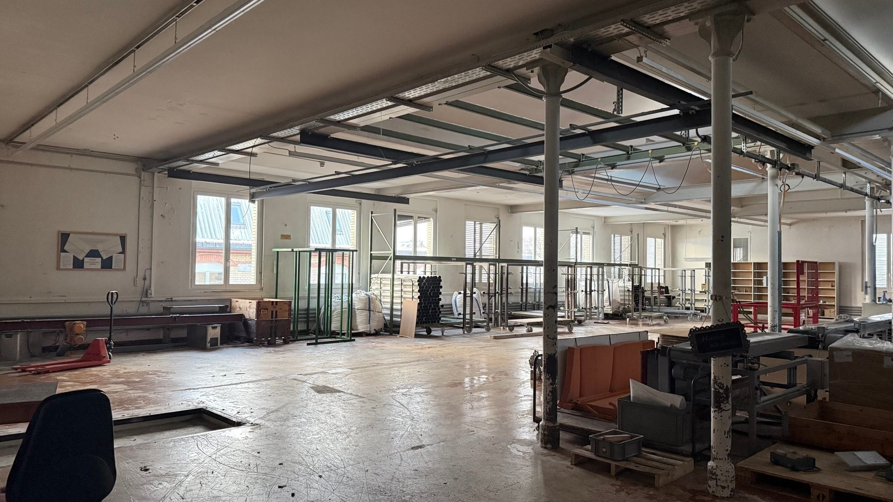
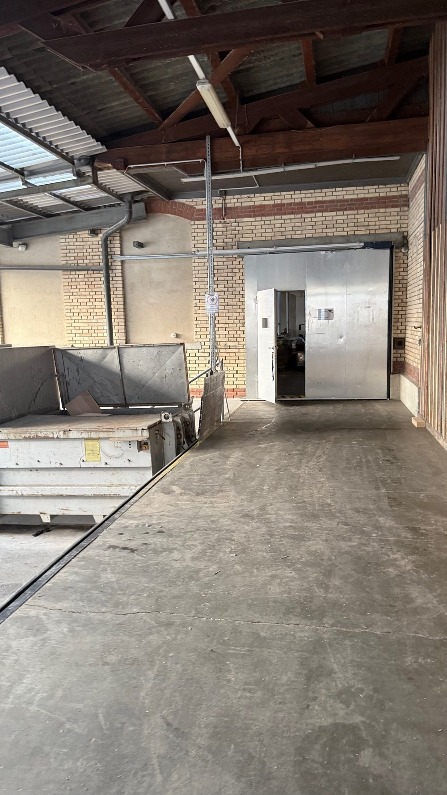

Areal der ehemaligen Weberei
Ein Ort mit Geschichte, offen für Neues
135 Jahre wurde an der Madetswilerstrasse gewoben, bis 2025 als letzte industrielle Weberei des Kantons Zürich. Heute bietet der historische Backsteinbau mit Sheddach Raum für Büros, Ateliers, Werkstätten und Lager.
Das Areal
Industriecharme an der Madetswilerstrasse
Der langgezogene Backsteinbau mit seinem sägezahnförmigen Sheddach prägt das Ortsbild von Russikon. Was über Generationen als Weberei diente, wurde aufgefrischt und steht heute Unternehmen und Privatpersonen als vielseitige Gewerbefläche offen.
Hohe Räume, viel Tageslicht durch die Shedfenster und die robuste Substanz der alten Fabrik bilden einen Rahmen, der sich für unterschiedlichste Nutzungen eignet: vom Atelier über das Büro bis zur Werkstatt.

Entdecken
Zwei Wege ins Areal
Eine Fläche im Blick?
Sehen Sie sich die Grundrisse und die Flächenliste an und nehmen Sie mit wenigen Klicks Kontakt mit der Verwaltung auf.